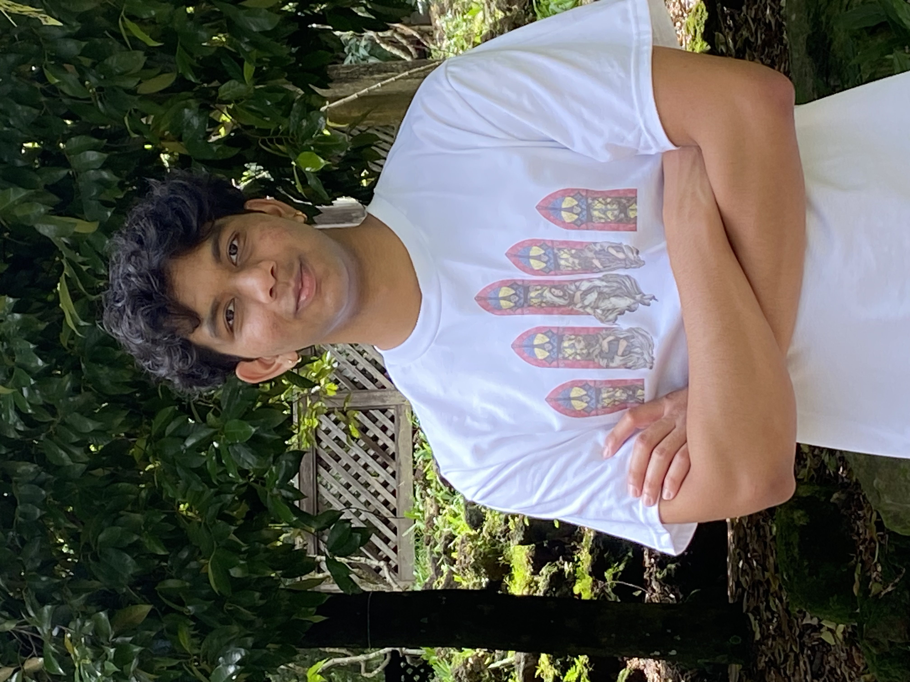

About Me
Hi there! My name is Darin Peries, and I am a Junior computer engineering major at Texas A&M. My hobbies are cooking, playing soccer, and working out. I have interned at companies such as Ansys and HPE, and I have interests in distributed systems and concurrency. Please feel free to look around while you are here!